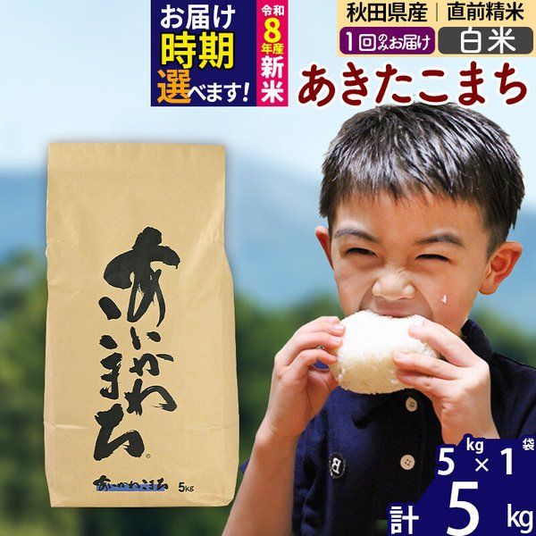
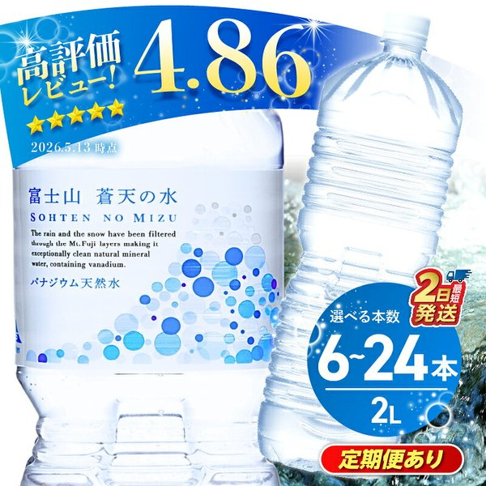
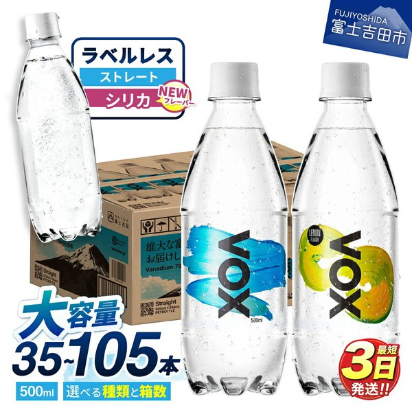
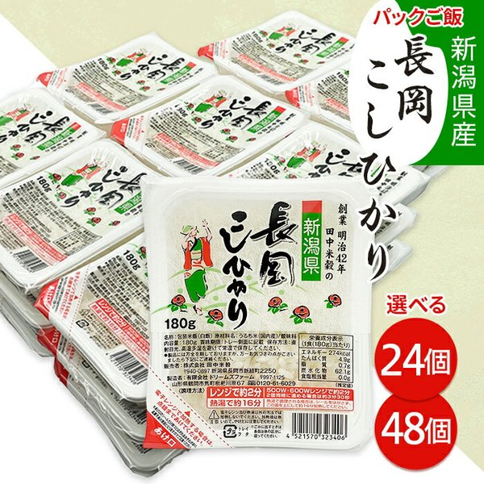
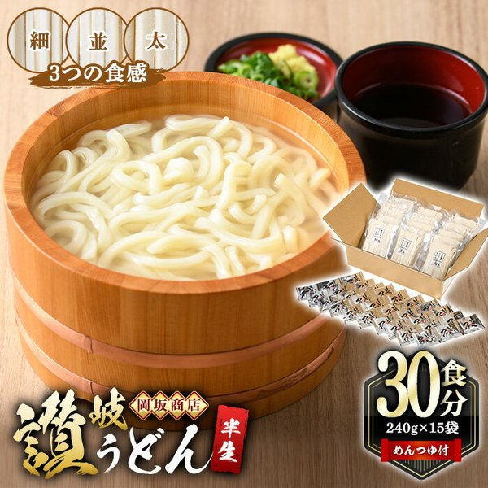
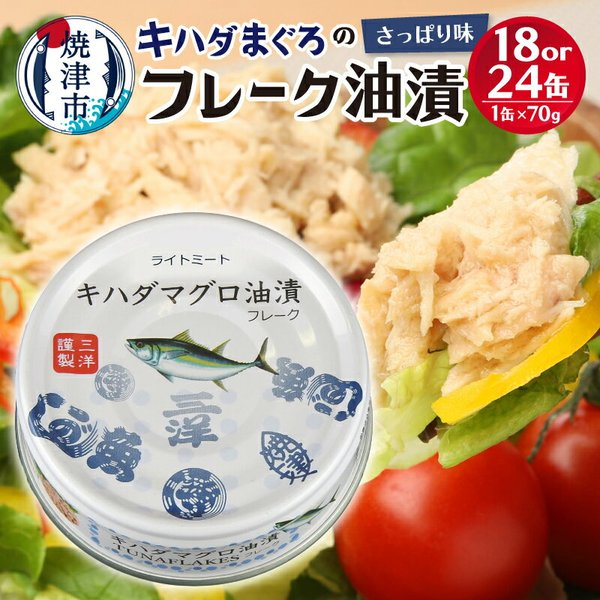
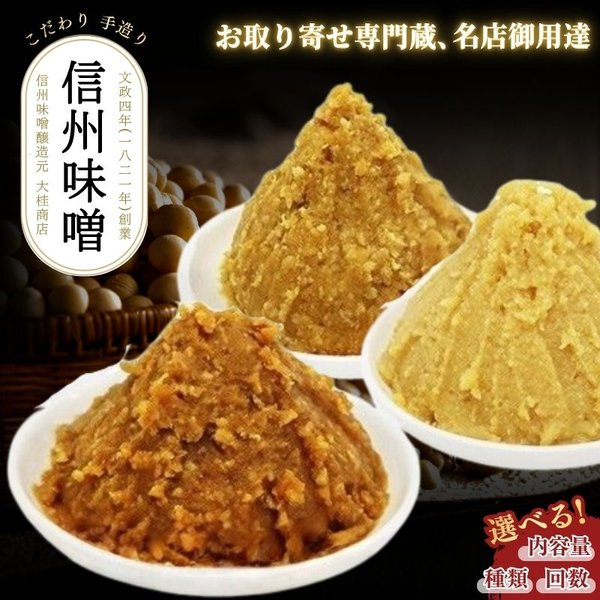
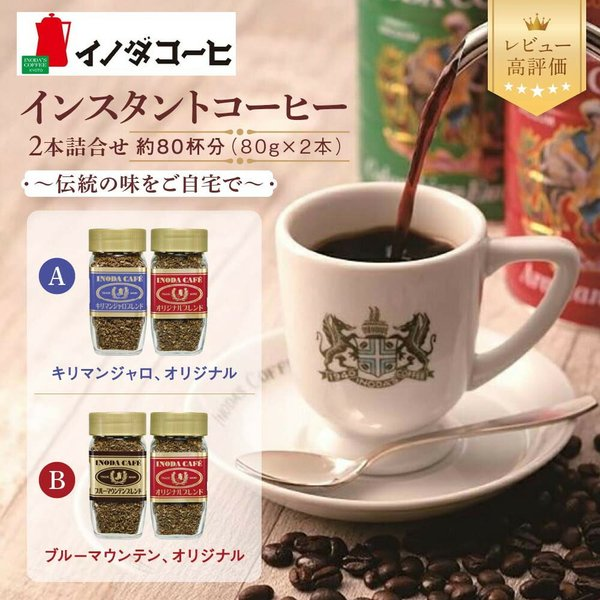
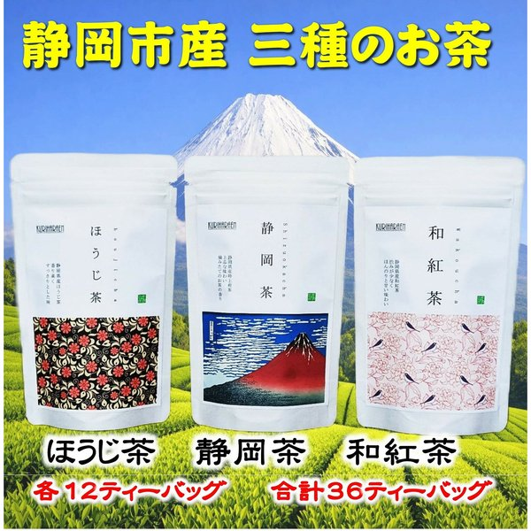

【2026年ふるさと納税】食費が劇的に浮く！お米・お水・麺類・定番ストックの毎日消費できる返礼品おすすめ10選
ふるさと納税でいちばん失敗が少ないのは、毎月必ず買っているものを返礼品にすることです。流行りのグルメは食べ切れずに終わることもありますが、米・水・麺・缶詰なら、使うタイミングを選びません。
選ぶときの軸は3つ。消費量が読めるか、保存がきくか、そして寄附額に対して量が妥当かです。米は10kgより5kgの小分けのほうが鮮度を保ちやすく、水や炭酸水はラベルレスのほうが分別が楽になります。返礼品は寄附額の3割以下と決まっているので、同じ寄附額なら容量と送料込みの総額で比べるのが確実です。なお、自己負担は2,000円で、寄附した自治体ごとに申し込みが必要です。
本記事では、楽天市場で人気・高評価の毎日消費できるふるさと納税返礼品10選を、実売価格とレビュー評価つきで写真付き紹介します。
- おすすめ10選 スペック・特徴比較表
- BEST 1｜新潟県産 コシヒカリ／こしいぶき 2kg〜10kg（単品・定期便）
- BEST 2｜秋田県産 あきたこまち 5kg（白米・5kg小分け袋）
- BEST 3｜富士山蒼天の水 ラベルレス 2L 6本〜24本
- BEST 4｜VOX 強炭酸水 500ml×35本（ラベルレス）
- BEST 5｜新潟県産コシヒカリ パックご飯 180g×24個／48個
- BEST 6｜讃岐うどん 3つの食感食べ比べ 30食分（240g×15袋・めんつゆ付）
- BEST 7｜ツナ缶 セット 選べる缶数（まぐろ・常温保存）
- BEST 8｜信州味噌 無添加セット（選べる内容・回数）
- BEST 9｜イノダコーヒ インスタントコーヒー 2本セット（選べる2種）
- BEST 10｜静岡市産茶 詰め合わせ（煎茶・ほうじ茶・和紅茶）
- 【読者負担0円】買わなくても得する無料サービス
- まとめ：毎日消費できる返礼品10選の選び方
| 順位 | 商品名 | ブランド | 最大の特徴・おすすめ理由 | 総合評価 |
|---|---|---|---|---|
| BEST 1 | 新潟県産 コシヒカリ／こしいぶき 2kg〜10kg（単品・定期便） | 新潟県 | 2kg〜10kgまで容量を選べる | 4.59 |
| BEST 2 | 秋田県産 あきたこまち 5kg（白米・5kg小分け袋） | 藤岡農産（秋田県北秋田市） | 5kg小分けで鮮度を保ちやすい | 4.63 |
| BEST 3 | 富士山蒼天の水 ラベルレス 2L 6本〜24本 | 富士山蒼天の水（山梨県忍野村） | ラベルレスで分別が簡単 | 4.87 |
| BEST 4 | VOX 強炭酸水 500ml×35本（ラベルレス） | VOX | 35本入りで買い足し不要 | 4.70 |
| BEST 5 | 新潟県産コシヒカリ パックご飯 180g×24個／48個 | 田中米穀（新潟県長岡市） | 常温保存で備蓄にも使える | 4.64 |
| BEST 6 | 讃岐うどん 3つの食感食べ比べ 30食分（240g×15袋・めんつゆ付） | 本場讃岐うどん | 細麺・並麺・太麺の3種で飽きない | 4.71 |
| BEST 7 | ツナ缶 セット 選べる缶数（まぐろ・常温保存） | 焼津市 | 常温で長期保存できる | 4.83 |
| BEST 8 | 信州味噌 無添加セット（選べる内容・回数） | 信州味噌 | 国産原料の米みそ | 4.81 |
| BEST 9 | イノダコーヒ インスタントコーヒー 2本セット（選べる2種） | イノダコーヒ（京都） | 1本で約80杯分 | 4.87 |
| BEST 10 | 静岡市産茶 詰め合わせ（煎茶・ほうじ茶・和紅茶） | 静岡市 | 煎茶・ほうじ茶・和紅茶の3種 | 4.87 |
新潟県産 コシヒカリ／こしいぶき 2kg〜10kg（単品・定期便）

新潟県の返礼品で、新米のコシヒカリを2kgから10kgまで選べます。単品でも定期便でも受け取れて、毎月届く設定にしておけば買い足す手間がなくなります。同じ寄附額でも容量が選べるので、家族の人数と炊くペースに合わせて決められます。精米したての袋が届くため、開封した袋から順に使い切れます。楽天市場での実売価格は約5,300円（2026年11月時点）。
- 2kg〜10kgまで容量を選べる
- 単品・定期便の両方に対応
- レビュー302件・評価4.59
- 容量を変えると寄附額も変わるので、申し込み前に総額を確認する
秋田県産 あきたこまち 5kg（白米・5kg小分け袋）

秋田県北秋田市の藤岡農産が精米するあきたこまち5kg。5kgの小分け袋なので、開封してからも風味が落ちにくく、夫婦2人なら1ヶ月ほどで食べ切れます。あっさりした甘みで、冷めても粒が立ちやすい品種なので、お弁当にも向いています。白米のほか、発送時期も選べます。楽天市場での実売価格は約9,500円（2026年11月時点）。
- 5kg小分けで鮮度を保ちやすい
- あきたこまちの定番の味
- レビュー98件・評価4.63
- レビューは100件に少し届かず、口コミはまだ増えている途中
富士山蒼天の水 ラベルレス 2L 6本〜24本

山梨県忍野村の返礼品で、富士山の伏流水をボトリングした天然水。ラベルレスのボトルなので、リサイクルに出すときにラベルをはがす手間がありません。軟水でくせがなく、そのまま飲むほか、味噌汁や炊飯にも使えます。6本から24本まで本数を選べ、定期便にも対応しています。楽天市場での実売価格は約4,500円（2026年11月時点）。
- ラベルレスで分別が簡単
- 軟水で料理にも使える
- レビュー83件・評価4.87
- 重いので、玄関先までの配送でも置き場所を決めてから注文する
VOX 強炭酸水 500ml×35本（ラベルレス）

ふるさと納税限定の強炭酸水35本セット。500mlのペットボトルで、ラベルレスなので箱から出して冷蔵庫に詰められます。炭酸の強さがしっかりあるタイプで、そのまま飲むほか、割り材としても使えます。35本あると、毎日1本飲んでも1ヶ月もちます。楽天市場での実売価格は約5,800円（2026年11月時点）。
- 35本入りで買い足し不要
- 強炭酸で割り材にも使える
- レビュー1,303件・評価4.70
- 炭酸が抜けないよう、開封後は早めに飲み切る
新潟県産コシヒカリ パックご飯 180g×24個／48個

新潟県長岡市の返礼品で、新潟県産コシヒカリを炊いてパックに詰めた常温保存のご飯です。180gは茶碗1杯よりやや多めで、おかずが少ない日でも満足できます。レンジで温めるだけで済むので、残業で帰りが遅くなった日や、米を炊く時間がない朝の逃げ道になります。24個と48個から選べ、賞味期限も長めです。楽天市場での実売価格は約12,000円（2026年11月時点）。
- 常温保存で備蓄にも使える
- レンジ加熱だけで食べられる
- 24個／48個から選べる
- 48個は置き場所を取るので、収納の空きを確認してから
讃岐うどん 3つの食感食べ比べ 30食分（240g×15袋・めんつゆ付）

香川の讃岐うどんを、細麺・並麺・太麺の3種類で食べ比べできる30食分のセット。半生タイプなので、ゆで時間が短く、乾麺のような戻しの手間がありません。めんつゆが付属するため、届いた日にそのまま食べられます。1袋240gは1〜2人前で、15袋あれば平日の昼や夜の主食をまとめて確保できます。楽天市場での実売価格は約13,000円（2026年11月時点）。
- 細麺・並麺・太麺の3種で飽きない
- 半生でゆで時間が短い
- めんつゆ付きですぐ食べられる
- 半生麺なので、到着後は冷蔵または冷凍で保管する
ツナ缶 セット 選べる缶数（まぐろ・常温保存）

静岡県焼津市の返礼品のツナ缶セット。まぐろを油で漬けた定番の缶詰で、常温で長く保存できるため、ふだんの料理にも備蓄にも回せます。パスタやサラダ、丼ものにそのまま使えて、包丁を入れずに1品足せるのが強みです。缶数を選べるので、収納に合わせて調整できます。楽天市場での実売価格は約10,000円（2026年11月時点）。
- 常温で長期保存できる
- 包丁なしで1品足せる
- レビュー760件・評価4.83
- 缶の数が増えると重量があり、収納場所もそれなりに必要
信州味噌 無添加セット（選べる内容・回数）

長野県の返礼品の信州味噌。国産原料で、添加物を抑えた米みそを詰め合わせたセットです。信州味噌は白っぽく甘みのあるタイプで、豚汁や野菜炒め、毎日の味噌汁に向いています。内容と回数を選べるので、定期的に届けてもらう使い方もできます。楽天市場での実売価格は約6,200円（2026年11月時点）。
- 国産原料の米みそ
- 内容・回数を選べる
- レビュー129件・評価4.81
- 味噌は開封後に冷蔵庫へ移し、乾燥を防いで使う
イノダコーヒ インスタントコーヒー 2本セット（選べる2種）

京都の喫茶店、イノダコーヒのインスタントコーヒーを2本まとめた返礼品。キリマンジャロとブルーマウンテン系などから選べ、1本で約80杯分あります。お湯に溶かすだけなので、豆を挽く道具がなくても喫茶店の味に近づけられます。2本で計約160杯分と、しばらく買い足さずに済む量です。楽天市場での実売価格は約10,000円（2026年11月時点）。
- 1本で約80杯分
- 2種から選べる
- レビュー76件・評価4.87
- インスタントのため、豆から淹れる味とは異なる
静岡市産茶 詰め合わせ（煎茶・ほうじ茶・和紅茶）

静岡市の返礼品で、静岡市内で栽培された煎茶・ほうじ茶・和紅茶を詰め合わせたセット。同じ産地でも茶種が違うので、気分や食事に合わせて飲み分けられます。緑茶は食事に、ほうじ茶は就寝前に、和紅茶は甘いものと合わせるといった使い方ができます。ティーバッグ形式も選べます。楽天市場での実売価格は約5,000円（2026年11月時点）。
- 煎茶・ほうじ茶・和紅茶の3種
- 産地が同じで味の違いを比べやすい
- レビュー172件・評価4.87
- 茶葉は湿気を避けて保存し、開封後は早めに飲み切る
この記事の商品を買う前に、まずは無料で得する選択肢をチェック。どれも登録・利用は0円で、無料期間中に解約すれば料金はかかりません。読みたい雑誌がある人、ポイントを貯めたい人、アンケートなら気軽という人、それぞれに合うものを選べます。
初回31日無料・無料期間中に解約すれば0円 → 楽天ポイントモール｜登録無料で毎日ポイ活
買い物なしでもポイントが貯まる無料サービス → 楽天インサイト｜アンケートに答えてポイント
登録無料・すきま時間のアンケートで貯まる → 楽天カード｜年会費永年無料
新規発行・年会費ずっと0円 →
4つのサービスの違いと使い分けは「出費0円で得する！買わずにポイントが貯まる無料サービス厳選4選」でまとめています。
💡 まとめ：毎日消費できる返礼品10選の選び方
ふるさと納税は、特別なごちそうより毎日の主食に向いています。米は5kgの小分けを選べば鮮度を保ったまま使え、パックご飯は炊く時間がない日の保険になります。水と炭酸水はラベルレスなら分別が楽で、うどんやツナ缶、味噌は常温で置けるため、冷蔵庫の空きを気にせずストックできます。コーヒーとお茶は、毎日飲む量が多い人ほど元が取れます。寄附する前に、自分の家で1ヶ月に何をどれだけ使うかを書き出してみると、返礼品選びの迷いが減ります。
楽天市場では「5と0のつく日」や「お買い物マラソン」などのキャンペーンに合わせて購入すると、ポイント還元が最大化してお得に手に入ります。ぜひチェックしてみてくださいね。